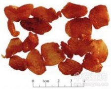

龙眼肉

拼音
Lónɡ Yǎn Ròu
别名
龙眼、桂圆、圆眼
来源
本品为无患子科龙眼属植物龙眼Dimocarpus longan Lour.的假种皮。夏、秋二季采收成熟果实，干燥，除去壳、核，晒至干爽不黏。
生境分布
分布福建、台湾、广东、广西、云南、贵州、四川等地。主产广西、福建、广东、四川、台湾等地。
药材特点
龙眼，又名：龙目（《蜀都赋》），比目（《吴普本草》），荔枝奴（《南方草木状》），绣木团、川弹子（《清异录》），亚荔枝（《开宝本草》），木弹、骊珠、燕卵、鲛泪、圆眼（《纲目》），海珠丛（《群芳谱》），桂圆（《药品化义》）。 常绿乔木，高达10米以上。幼枝被锈色柔毛。双数羽状复叶，互生，长15～20厘米；小叶2～5对，通常互生，革质，椭圆形至卵状披针形，长6～15厘米。先端短尖或钝，基部偏斜，全缘或波浪形，暗绿色，嫩时褐色，下面通常粉绿色。花两性，或单性花与两性花共存；为顶生或腋生的圆锥花序；花小，黄白色，直径4～5毫米，被锈色星状小柔毛；花萼5深裂，裂片卵形；花瓣5，匙形，内面有毛；雄蕊通常8；子房2～3室，柱头2裂。核果球形，直径1.5～2厘米，外皮黄褐色，租糙，假种皮白色肉质，内有黑褐色种子1颗。花期3～4月。果期7～9月。
性状
本品为纵向破裂的不规则薄片，常数片粘结。长约1.5cm,宽2～4cm，厚约0.1cm。棕褐色，半透明。一面皱缩不平，一面光亮而有细纵皱纹。质柔润。气微香，味甜。
性味
甘，温。
功能主治
补益心脾，养血安神。用于气血不足，心悸怔忡，健忘失眠，血虚萎黄。
用法用量
9～15g。
化学成分
含葡萄糖、酒石酸、蔗糖、维生素B1、B2、P、C。
药理作用
1：龙眼水浸剂（1：2）在试管内对奥杜盎氏小芽胞癣菌有抑制作用
摘录
《中国药典》